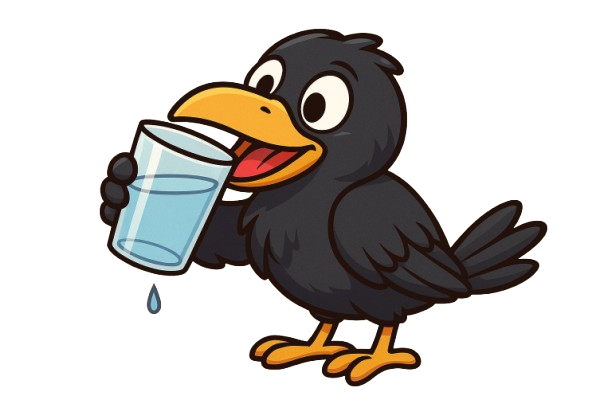

Once upon a time, there was a little crow named Crowbie. In the old fables, crows had to work hard just to get a sip of water. They’d drop pebbles in jars, wait patiently, and hope their beak could finally reach the drink.
But Crowbie? Nah. Crowbie’s living in 2025. No pebbles. No dusty jars. No “once upon a time” struggles. Crowbie’s got a shiny glass of water, a Wi-Fi connection, and a crypto wallet.
See, Crowbie’s thirst isn’t just for water anymore — it’s for opportunity, for memes, for a community that’s as fresh as a cold sip on a summer day. Every drop in Crowbie’s glass is a drop of value shared with the flock.
When you hold $Crowbie, you’re not just holding a token — you’re part of the Flockchain, a worldwide crew of thirsty dreamers who believe in sipping together, winning together, and never letting the glass run dry.
Crowbie’s mission?
💧 Quench the thirst for fun in crypto.
💧 Reward the loyal flock.
💧 Turn a timeless story into a modern meme legend.
And remember… in Crowbie’s world, there’s always enough water for everyone. 🐦💧
Buy $Crowbie on RaydiumToken Name: Crowbie
Symbol: $CROWBIE
Total Supply: 1,000,000,000
Token Type: Meme
Blockchain: Solana
Contract Address: 7XWq4TXqv1ckMjsPKcqtgFHfxTNQethbPWWK6RaVna4p
🚀 **Phase 1 – Hatch the Flock**
Token launch, website live, first sips shared.
🌊 **Phase 2 – The Big Sip**
First meme contests, reward pools, early holder perks.
🐦 **Phase 3 – Flock Expansion**
NFT Crowbie collectibles, partnerships, community merch.
🌎 **Phase 4 – World Hydration Mission**
Global awareness campaigns for clean water, major exchange listings.
🚫 We don’t have Telegram or X yet — because we believe in building first. When we have real holders and true believers, we’ll open the flock gates. Crowbie is here to stay — growing sip by sip, and aiming to make clean water accessible for everyone. If you’re here early, you’re basically sipping history. 🐦💧